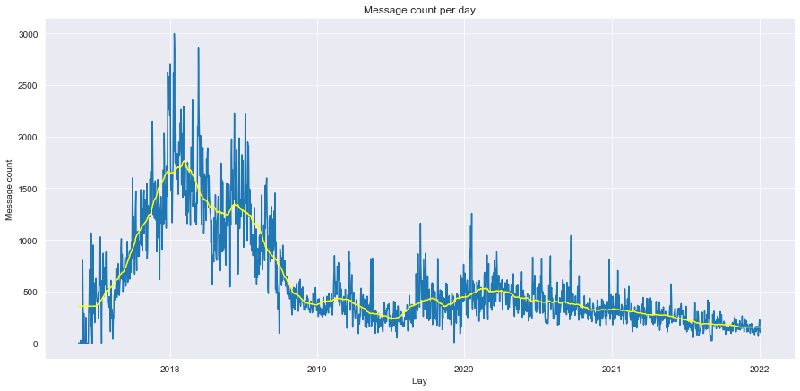
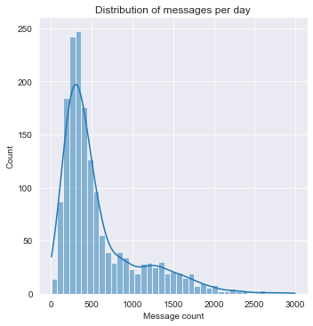
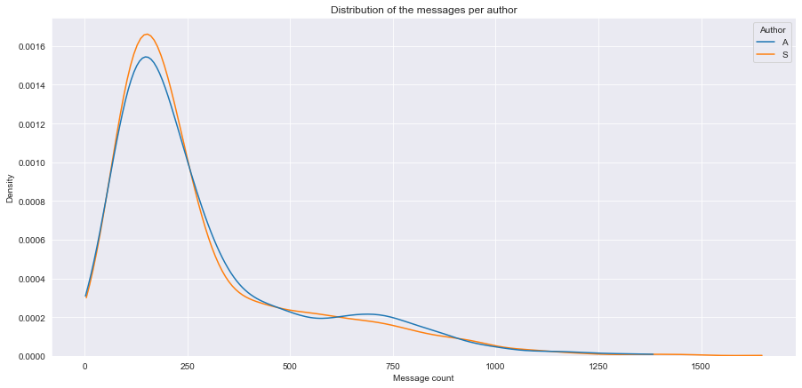
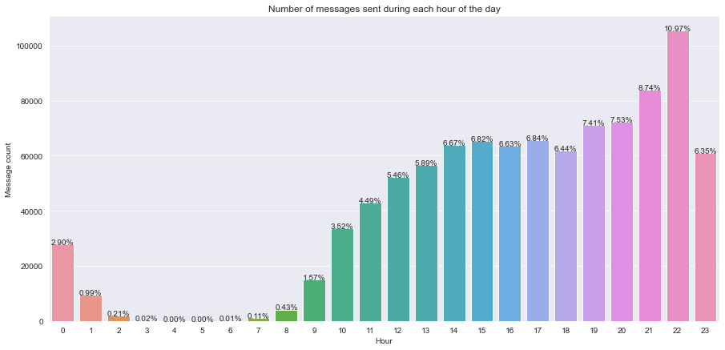
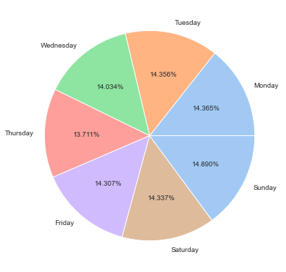

import matplotlib.pyplot as plt
import pandas as pd
import seaborn as sns
import numpy as np
import warnings
warnings.filterwarnings('ignore')
sns.set_style("darkgrid")Discord analyzer
The point of this project is to extract Discord messages, analyze them and see what I can find out.
So I’ll start with some includes…
Data preparation
Next, time to load the extracted data, drop the columns I won’t be using and prepare the dataframe for further analysis. Lastly, I’ll print out the columns to get a better idea of what is in the dataframe without exposing any of the messages.
df = pd.read_csv('chat.csv')
df.drop(columns=['AuthorID', 'Reactions'], inplace=True)
df['Author'] = df['Author'].str.replace(r"#[0-9]+", "") # leave only usernames
df['Content'] = df['Content'].fillna("")
df.insert(2, 'Time', pd.to_datetime(df['Date']).dt.time)
df['Date'] = pd.to_datetime(df['Date']).dt.date
df.columnsIndex(['Author', 'Date', 'Time', 'Content', 'Attachments'], dtype='object')Basic information about messages in the dataset
Next two cells will give us the most basic information we can get: total messages per author, mean, median, etc… you get the idea.
Additionally, I’ll try to find the so-called highest streak: the maximum period of days when at least one message was sent per day.
def get_the_highest_streak(msgs_per_day: pd.Series) -> tuple:
"""
Finds and returns the highest messaging streak found in the dataset.
Think of it as snapchat fires. But on discord.
:param msgs_per_day: series where index represents every day when message has been sent
:return: start of the streak, end of the streak, duration of the streak
"""
days = msgs_per_day.sort_index().index
start, end, prev, streak = 0, 0, 0, 0
max_start, max_end, max_streak = 0, 0, 0
one_day = pd.DateOffset()
for day in days:
if start == 0:
start, prev = day, day
elif prev + one_day == day:
prev = day
streak += 1
else:
streak = streak + 1 if streak != 0 else 0
end = prev if streak != 0 else 0
if streak > max_streak:
max_start, max_end, max_streak = start, end, streak
start, prev, end, streak = 0, 0, 0, 0
if streak > max_streak:
return start, 0, streak
return max_start, max_end, max_streaktotal_msgs = len(df)
messages = df['Author'].value_counts()
author_1, author_2 = messages.index.to_numpy()
msgs_per_author = messages.values
date_val_cnts = df['Date'].value_counts()
max_msg_day, max_msg_cnt = date_val_cnts.index[0], date_val_cnts[0]
msgs_info = date_val_cnts.describe()
start, end, streak = get_the_highest_streak(date_val_cnts)
index = ['Total message count', f"{author_1}'s total message count", f"{author_2}'s total message count",
'Number of days in dataset',
'Most messages per day date', 'Most messages per day count',
'Messages per day mean', 'Messages per day median', 'Messages per day std',
'Highest message streak (days)', 'Begin of the highest streak', 'End of the highest streak']
data = [total_msgs, msgs_per_author[0], msgs_per_author[1], int(msgs_info[0]),
max_msg_day, max_msg_cnt,
msgs_info[1], msgs_info[5], msgs_info[2],
streak, start, "ongoing" if end == 0 and streak != 0 else end]
basic_info_df = pd.DataFrame(index=index, data=data, columns=['Data'])
print(basic_info_df) Data
Total message count 959905
A's total message count 486046
S's total message count 473859
Number of days in dataset 1668
Most messages per day date 2018-01-12
Most messages per day count 2996
Messages per day mean 575.482614
Messages per day median 394.0
Messages per day std 479.946682
Highest message streak (days) 1630
Begin of the highest streak 2017-07-18
End of the highest streak ongoingMessage count analysis
Next plot will show the amount of messages sent per day during the entire dataset timeline. Since the dataset is quite big, I’ll also plot the regression line to get the better idea of the data.
def get_messages_per_day(_df: pd.DataFrame, missing_days = True) -> pd.DataFrame:
"""
Creates and returns a new dataframe with information how many messages were sent every day since beginning of messages in original dataframe until the last day in the dataset. It includes the days when no conversation took place.
:param missing_days: boolean representing if missing days should be included in the dataset
:param _df: "raw" dataframe containing all messages
:return: dataframe consisting of two columns: Day and Message count for that day
"""
val_cnts = _df['Date'].value_counts()
ret = pd.DataFrame(val_cnts).reset_index()
ret.rename(columns={'index': 'Day', 'Date': 'Message count'}, inplace=True)
if missing_days:
missing_days = pd.date_range(start=ret['Day'].min(), end=ret['Day'].max())\
.difference(ret['Day']).values
ret = pd.concat(
[ret,
pd.DataFrame(data=[[pd.to_datetime(day).date(), 0] for day in missing_days], columns=['Day', 'Message count'])],
ignore_index=True)
ret.sort_values(by='Day', inplace=True)
return retmsgs_per_day = get_messages_per_day(df)
plt.figure(figsize=(15, 7))
sns.lineplot('Day', 'Message count', data=msgs_per_day).set_title('Message count per day')
# Plot the regression line
from sklearn.neighbors import KNeighborsRegressor
days = np.array([i for i in range(0, len(msgs_per_day))])
knr = KNeighborsRegressor(n_neighbors=int(0.05 * len(msgs_per_day)), n_jobs=-1, weights='uniform')
knr.fit(X=days.reshape(-1, 1), y=msgs_per_day['Message count'])
predited = knr.predict(days.reshape(-1, 1))
sns.lineplot(msgs_per_day['Day'], predited, color='yellow')<AxesSubplot:title={'center':'Message count per day'}, xlabel='Day', ylabel='Message count'>
Overall distribution of messages per day
If we treat messages per day as a random variable, what kind of distribution would it have?
plt.figure(figsize=(15, 7))
sns.displot(data=get_messages_per_day(df, missing_days=False), x='Message count', kde=True)
plt.title("Distribution of messages per day")Text(0.5, 1.0, 'Distribution of messages per day')<Figure size 1080x504 with 0 Axes>
Kernel density visualization of the distributions
So far, things are looking quite the same. I’ll plot both density distributions for better comparison.
plt.figure(figsize=(15,7))
sns.kdeplot(data=combined_author_msgs, x='Message count', hue='Author', cut=0)
plt.title("Distribution of the messages per author")Text(0.5, 1.0, 'Distribution of the messages per author')
So far looking fairly similar.
I can also conclude that distributions deviate significantly from normal distribution, and it’s positively skewed.
A couple more distribution visualizations because why not…
Boxplot visualization of the distributions
plt.figure(figsize=(15,7))
sns.boxplot(data=combined_author_msgs, x='Author', y='Message count')
plt.title("Distribution of messages per author")Text(0.5, 1.0, 'Distribution of messages per author')
Statistical tests to determine whether the distributions are equal
Mann-Whitney U Test
Null hypothesis: the two groups have the same distribution
Alternative hypothesis: one group has larger (or smaller) values than the other
Assumption: variances of two groups are equal
Test to determine if variances are equal
In order to properly use the Mann-Whitney U Test, we need to determine whether variances differ significantly. The most common test used for that is F-test, however F-test is very sensitive to normality of the data (which here most often won’t be the case, instead it’s usually a positively skewed distribution). Instead, I’ll use more robust variants of the test. There are two options: Bartlett’s and Levene’s test. Levene’s test is an alternative to Bartlett’s when there are significant deviations from normality. I’ll perform both tests and compare the results.
Null hypothesis: all input samples are from populations with equal variances
alpha = 0.05 # significance levelfrom scipy.stats import bartlett, levene
# Bartlett's test
stat, p_value = bartlett(msgs_per_day_a1['Message count'], msgs_per_day_a2['Message count'])
print(f"Bartlett's Test: statistic={stat:.4f}, p-value={p_value:.4f}\nConclusion: {'Do not reject' if p_value >= alpha else 'Reject'} null hypothesis under significance level of {alpha}.")
# Levene's test
stat, p_value = levene(msgs_per_day_a1['Message count'], msgs_per_day_a2['Message count'])
print(f"Levene's Test: statistic={stat:.4f}, p-value={p_value:.4f}\nConclusion: {'Do not reject' if p_value >= alpha else 'Reject'} null hypothesis under significance level of {alpha}.")Bartlett's Test: statistic=0.0712, p-value=0.7896
Conclusion: Do not reject null hypothesis under significance level of 0.05.
Levene's Test: statistic=1.1433, p-value=0.2850
Conclusion: Do not reject null hypothesis under significance level of 0.05.After performing the mentioned tests, I can now perform the Mann-Whitney U test to finally conclude whether or not the distributions are the same.
from scipy.stats import mannwhitneyu
stat, p_value = mannwhitneyu(msgs_per_day_a1['Message count'], msgs_per_day_a2['Message count'])
print(f"Mann-Whitney U Test: statistic={stat:.4f}, p-value={p_value:.4f}\nConclusion: {'Do not reject' if p_value >= alpha else 'Reject'} null hypothesis under significance level of {alpha}.")Mann-Whitney U Test: statistic=1416884.5000, p-value=0.3386
Conclusion: Do not reject null hypothesis under significance level of 0.05.Distribution of messages during the day
The next plot will show overall distribution of messages during the day and answer the question at what time of the day is the most conversation happening.
msgs_per_hour = df.groupby(by=['Time'], as_index=False)['Content'].count()
msgs_per_hour['Time'] = pd.to_datetime(msgs_per_hour['Time'].map(lambda t: str(t))) # this is so dumb to do
msgs_per_hour = msgs_per_hour.groupby(pd.Grouper(key='Time', freq='1H')).sum().reset_index()
msgs_per_hour.rename(columns={'Content': 'Message count', 'Time': 'Hour'}, inplace=True)
missing_times = pd.date_range(start='00:00', end='23:00', freq='1H').difference(msgs_per_hour['Hour']).values
msgs_per_hour = pd.concat(
[msgs_per_hour, pd.DataFrame(data=[[time, 0] for time in missing_times], columns=['Hour', 'Message count'])],
ignore_index=True)
msgs_per_hour['Hour'] = msgs_per_hour['Hour'].map(lambda t: t.hour)
plt.figure(figsize=(15, 7))
ax = sns.barplot(x='Hour', y='Message count', data=msgs_per_hour)
ax.set_title("Number of messages sent during each hour of the day")
total_msgs = sum(msgs_per_hour['Message count'].to_numpy())
patches = ax.patches
for i in range(len(patches)):
x = patches[i].get_x() + patches[i].get_width() / 2
y = patches[i].get_height() + 0.05
ax.annotate('{:.2f}%'.format(msgs_per_hour['Message count'][i] / total_msgs * 100), (x, y), ha='center')
plt.show()
Distribution of messages during the week
Similarly to the last visualization, I’ll show the distribution of messages depending on the day of the week using a pie chart.
msgs_per_weekday = msgs_per_day.copy(deep=True)
msgs_per_weekday['Day'] = pd.to_datetime(msgs_per_weekday['Day'])
msgs_per_weekday['Day'] = msgs_per_weekday['Day'].map(lambda t: t.weekday())
msgs_per_weekday = msgs_per_weekday.groupby(by=['Day'], as_index=False).sum()
msgs_per_weekday.rename(columns={'Day': 'Day of the week'}, inplace=True)
msgs_per_weekday['Day of the week'] = msgs_per_weekday['Day of the week'].map(
{0: 'Monday', 1: 'Tuesday', 2: 'Wednesday', 3: 'Thursday', 4: 'Friday', 5: 'Saturday', 6: 'Sunday'})
plt.figure(figsize=(15, 7))
colors = sns.color_palette('pastel')[0:6]
pie = plt.pie(msgs_per_weekday['Message count'], labels=msgs_per_weekday['Day of the week'], colors=colors,
autopct='%.3f%%')
Statistical test to determine if messages per weekday have uniform distribution
Chi-Squared Test
Chi-Squared test is used to determine whether the observed frequencies match the expected frequencies. I can take the observed number of messages per weekday and compare them to expected number of messages per weekday were it distributed uniformly (meaning each day would have total_messages / 7 messages).
Null hypothesis: observed frequencies do not differ significantly from expected frequencies
Alternative hypothesis: ! null hypothesis
Assumption: all observed and expected frequencies are at least 5
from scipy.stats import chisquare
assert (msgs_per_weekday['Message count'] > 5).all()
stat, p_value = chisquare(f_obs=msgs_per_weekday['Message count'])
print(f"Chi-Squared Test: statistic={stat:.4f}, p-value={p_value:.4f}\nConclusion: {'Do not reject' if p_value >= alpha else 'Reject'} null hypothesis under significance level of {alpha}.")Chi-Squared Test: statistic=519.6691, p-value=0.0000
Conclusion: Reject null hypothesis under significance level of 0.05.The initiator
The idea here is to determine who mostly starts a conversation in a day. For this purpose, I’ll define the initiator as the person who sends the first message in a day (past 5 AM) to figure out which person initiates the conversations more often.
msg_initiator = df[df['Time'] > pd.to_datetime('05:00').time()] # assume normal sleep schedule
msg_initiator = msg_initiator.groupby(by=['Date'], as_index=False).first()
msg_initiator['Author'].value_counts()A 1096
S 571
Name: Author, dtype: int64Seems like A is initiating a lot more conversations than S, whoever that may be.